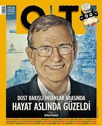
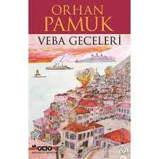

EDEBİYAT

"Karantinalarda tarih boyunca her zaman sonuç devletin otoriteleşmesi
olmuştur. Otoriterleşip muhalefeti ve kendinden olmayanları kenara itmesi..."
( "OT" dergi röportajından. Nisan 2021, Sayı : 97 )
Postmodern edebiyatın en önemli temsilcilerinden biri olan Orhan Pamuk, 5 sene
süren kapsamlı çalışmaları sonucunda " Veba Geceleri" adlı eserini okurlarına
sunmuştur. Roman 1900'lü yıllarda Osmanlıya ait aslında hayalî bir yer olan
Minger Adası'nda başlayan bir salgını konu ediniyor.
2016 yılında yazılmaya başlanan bu kitap günümüzde yaşanılan global krizin
önceden habercisi oluyor. Pandemi, karantina, salgın, ilaç, devlet, ölüm gibi tıpkı
mevcut durumumuz nasıl ise romanda da aynı kavramlara ve olaylara şahit
oluyoruz.
Nobel ödüllü başarılı yazarımız Orhan Pamuk okuyucusunu şaşırtmıyor ve diğer
romanlarında yaptığı gibi satır aralarına hayali manzaralar yerleştiriyor. Şöyle ki,
kendisi daima rus edebiyatının önemli temsilcilerinden biri olan Tolstoy'u örnek
almış ve tıpkı onun yaptığı gibi sözcükleri resimlere aksettirmiştir. Yani okuyucu
hem roman okuyor , aynı zamanda okuduğu satırları zihninde bir sahne haline
getirebiliyor. Bu husus her ne kadar okuyucunun kabiliyetine ve hayal gücüne
bağlı olsa da, asıl önemli olan yazarın doğru ve yerinde tasvirler yapmış olmasıdır.
Orhan Pamuk bu konuda oldukça başarılı bir roman yazarıdır, hem tasvirleri
kuvvetli hem de içi dolu cümleler kuruyor. Tıpkı bu romanda olduğu gibi diğer
romanlarını da yazmadan evvel geniş çaplı araştırmalar yapıyor, analizleriyle daha
güçlü bir anlatım elde etmiş oluyor tıpkı bu romanı yazarken tarihi kaynaklardan
ve derlemelerden faydalandığı gibi. Kendisi bir edebiyatçı olmasına rağmen tarih
ile ilgilenen, geçmiş ve bugünün sentezini romanlarında en iyi şekilde yapabilen
bir yazardır. Öyle ki bu romanında da tarihi kaynakları iyice analiz etmiş, mevcut
otoritenin halka yaptığı baskıyı anlatmış ve çokça eleştiriler yapmıştır.
( "Veba Geceleri" adlı romanın yazım sürecinden bir fotoğraf.)
"Bu romanda kendimi çok yakın hissettiğim bir kahraman yok aslında. Doktor Nuri olacak diye düşündüm önce ama sonra tam kendimle özdeşleştirebileceğim bir kahramana dönüşmedi. Bu belki düşünmem gereken bir şey. Bir de belki Mina Mingerli dolayısıyla bir karakterle çok özdeşleşirsem, dünyayı o karekterin gözünden çok fazla görmeye başlarsam, Mina Mingerli ya da büyük babaannesi Pakize Sultan "Hoop hoop kahramanlara kapılma, bize şehirde ne olduğunu anlat, bize genel olayları ve tarihi anlat, kahramanların peşinden sürüklenme" diyorlardı. O yüzden belki de kendi duygularımı, kendimi çok fazla koyamadığım bir roman oldu Veba Geceleri. Çok memnunum romanımdan ama bu romanda kahramanların içinde değil, üslupta, mantıkta, hikayelerde varım ben."
(Kitabın kapak fotoğrafını da Orhan Pamuk resmetmiştir.)